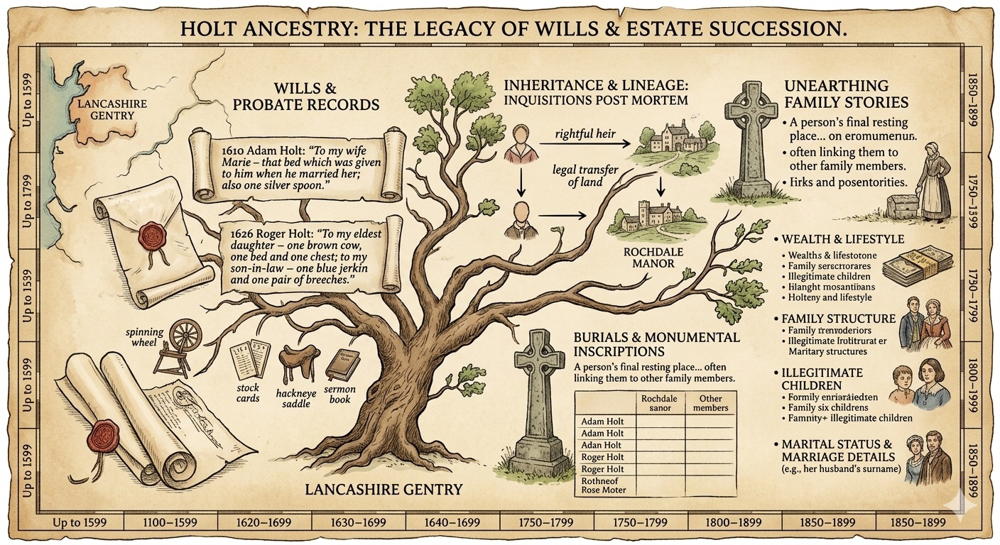

Lancashire Inquisitions Post Mortem & Feudal Succession Records
This is a consolidated record of the Holt (Holte, Hoult) family Inquisitions Post Mortem (IPM) for the County of Lancashire. This list merges the primary manorial records with the specific branch inquiries from the Stuart period, ensuring the dates and locations align with the original legal filings.

The Holt family was one of the most prolific land-owning dynasties in the Hundred of Salford. Because they held their estates through knight service or socage under the Duchy of Lancaster, every death of a head of household required a formal inquisition to verify the heir and the Crown's dues.
The following table provides the definitive list of these legal proceedings, spanning from the late medieval period to the eve of the English Civil War.
Chronological Record of Inquisitions
| 1494 (9 Hen VII) | James Holt | Gristlehurst | Esquire | Heir: Son Ralph. |
| 1520 (11 Hen VIII) | Robert Holte | Stubley, Rochdale | Esquire | Key expansion of the Stubley estates. |
| 1556 (3/4 P&M) | Ralph Holte | Gristlehurst | Esquire | Lord of Gristlehurst manor. |
| 1561 (3 Eliz I) | Robert Holte | Stubley | Esquire | Heir: Grandson Robert. |
| 1563 (5 Eliz I) | Sir Thomas Holte | Gristlehurst | Knight | Knighted in Scotland; expanded lands. |
| 3 Apr 1610 | Thomas Holt | Gristlehurst | Esquire | Boundary and forest rights inquiry. |
| 12 Jan 1617/18 | Francis Holt | Gristlehurst | Esquire | Heir: Son James (aged 17). |
| 20 Jan 1621 | Richard Holt | Ashworth Hall | Gentleman | Minor heir: Richard (aged 13). |
| 27 Mar 1621 | Adam Holt | Lower Place | Gentleman | Detailed messuages in Castleton. |
| 10 Jan 1622 | William Holt | Little Mitton | Esquire | Heir: Son John (aged 30+). |
| 8 Jan 1622/23 | John Holt | Stubley | Esquire | High Sheriff 1620; senior branch. |
| 26 Apr 1623 | James Hoult | Gristlehurst | Esquire | Died without issue; brother Theophilus. |
| 2 Sep 1624 | Robert Holt | Ashworth | Gentleman | Succession of the Ashworth estates. |
| 3 Sep 1624 | Richard Holt | Ashworth | Gentleman | Linked to the previous day’s inquiry. |
| 17 Jan 1624/25 | Robert Holt | Naden & Spotland | Gentleman | Heir: Son Robert (aged 13). |
| 10 Sep 1625 | Robert Holt | Ashworth | Gentleman | Final Stuart-era Ashworth settlement. |
| 24 Sep 1630 | Theophilus Holt | Gristlehurst | Esquire | Heir: Thomas (posthumous son). |
| 16 Mar 1633 | Theophilus Holt | Gristlehurst | Esquire | Supplementary land inquiry. |
| 12 May 1641 | Robert Holt | Castleton Hall | Esquire | High Sheriff 1639; major Royalist. |
Historical Context & Estate Descriptions
The Inquisitions listed above reveal a complex network of family branches. While Stubley was the ancestral cradle of the family, the Gristlehurst branch achieved higher social standing in the 16th century, evidenced by the knighthood of Sir Thomas Holte.
- The Lower Place Branch: The entry for Adam Holt (1621) anchors a distinct “Gentleman” branch at Lower Place in Castleton, holding specific messuages vital to the local economy.
- The back‑to‑back inquiries of September 2nd and 3rd reflect a complex legal transition involving feoffees to uses—an early form of trust—to protect the estate during the heir’s minority.
-
- Esquire (Armiger): Holder of a manor with right to bear arms.
- Gentleman (Generosus): High‑born or younger son of an Esquire with substantial property.
Inquistions
Copies of the published lancashire inquistions 1880, 1886, 1887-8
3 April 1610 Thomas Holte of Gristlehurst
12 Jan 1617 Francis Holte of Gristlehurst
27 March 1621 Adam Holt of Lower Place Gentleman
8 Jan 1622 John Holte of Stubley
26 April 1623 James Hoult Gentleman
3 Sept 1624 Richard Holt Gentleman
2 Sept 1624 Robert Holt of Ashworth Hall
Primary Sources
- Record Society of Lancashire and Cheshire: Vol. 3, 7, 14, 16, 17, 18.
- Chetham Society: Old Series Vol. 95 & 99.
- The National Archives: DUCH 3 (Duchy IPMs); C 142 (Chancery IPMs).